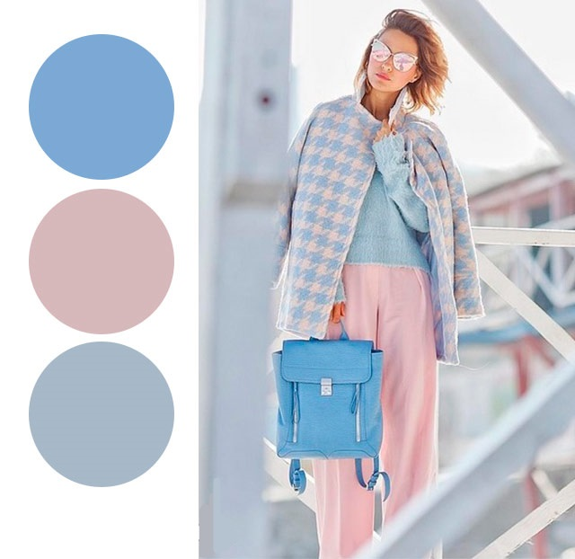
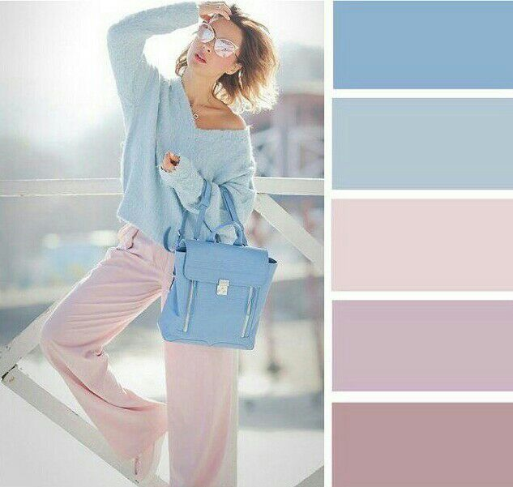

Pastel shades
So soft, romantic and ethereal, cupcake inspired pastel colors are the obsession of all girlish girls, who want to spice up their looks with some innocent and romantic vibe, breaking the monotony and diminishing all the blues. Milk caramel, velvety peach, pale pink, powdery mint, banana, guava, lavender and baby blue – all these delicious Easter egg inspired shades instantly cheer up and turn any look on the positive way. However, when it comes to real life, incorporating pastels to our wardrobes may seem a little tricky. There are just a few fashion tips to stick to and you’ll know how to wear pastels and not look like you are going to an Easter parade.After so many eye-catching prints and bold colors, these cotton candy shades come to rectify things and please the eye. Many designers give preference to lace pieces, creating a real poetic impressionism: whether it’s a lovely dress, a top or a skit, lace details go well along with pastel shades, making them appear even more delicate and feminine. Even casual dresses for a carefree stroll around the city, coming in delicate pale green, beige and blue colors with a minimum decoration, feature lovely lace, chiffon fabrics, looking so ethereal and trendy.One of the most alluring ways to nail down the pastel trend is the pastel colorblocking. Thus, you can confidently combine pastel pink with pale lemon, blue with mint green, creamy orange with purple, and wear pastels the best way. It’s also fun to wear pastels with brighter shades. In this case too, pay attention to the color wheel.Popular style is pastel skinny jeans. Pale lemon, peach, cotton candy mint, and coral jeans look light and feminine and perfectly go with simple tank-tops and pastel shoes. You can wear pastel colored denim pants both in summer and fall, trying to brighten up the gloomy season. Try to wear your pastel pants with some neutral top or go colorblocking, paying attention to the color wheel and sticking to the main color blocking rules.
Tips

- Pastel Nudes and Creams: Cream and beige tones are the most versatile of all the pastel shades, and they go literally with any other pastel or neutral shade. When matched with neutrals, cream and beige clothing pieces look sober and elegant being an amazing option to wear to the office. On the other hand, you can always pick cream shoes or other small details that will ideally finish off colorfuly pastel looks.
- Wearing Pastel Colors in Fall and Winter: Although pastels are those ice-cream shades meant for spring and summer, if you are so in love with their sweet character, you can always wear pastels in fall and winter too. Pastel sweaters always look amazing in combination with black and dark-wash jeans in winter, especially when you pick a mohair pastel sweater. You can also consider wearing pastel colored outerwear, such as pastel coats.
- Pastel Accessories: If you are not sure that you will feel self-confident in pastel clothes, start with small things here and there, mostly using pastel accessories, such as a pastel clutch, jewelry, hats or shoes in candy hues. You can also experiment with pastel makeup. Accessories in pastel shades can also be used separately with full black attire options. For example, a mint clutch or a pastel necklace worn over a black dress will create a magnificent look .
- Makeup to Wear with Pastel Clothes: Avoid pastel and colorful shades for your makeup when wearing pastel outfits. Instead keep things minimal and neutral, playing with versatile earth-toned eyeshadows, nude lipsticks and creating perfectly smooth skin.